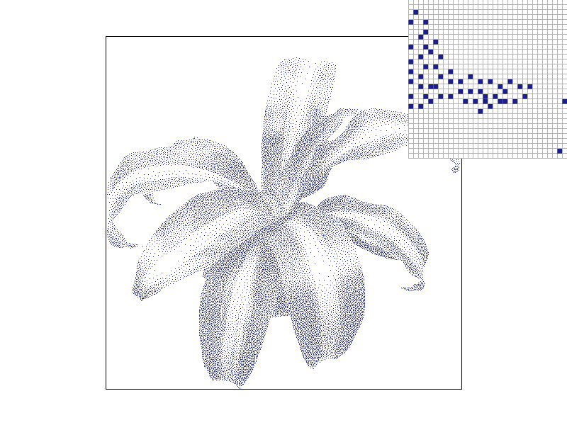
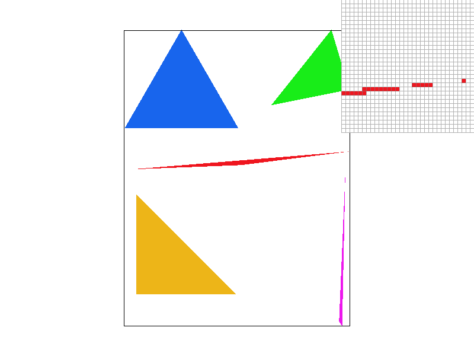
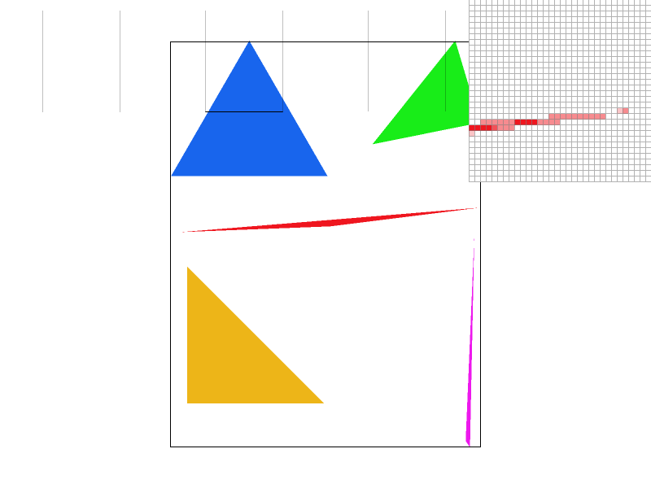
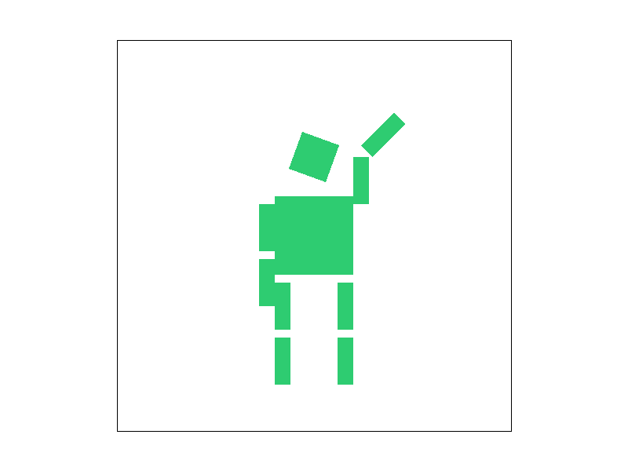
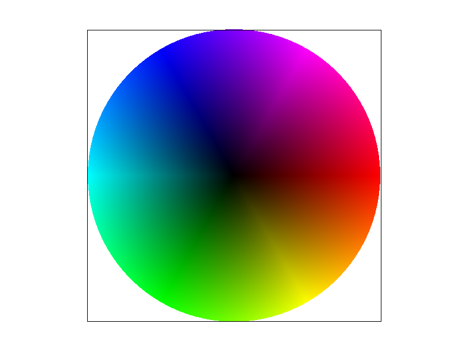

I rasterized each triangle by first computing an axis-aligned bounding box from the minimum and maximum x and y coordinates of its three vertices. I clipped the bounding box to the framebuffer boundaries and iterated only over the pixels within that region.
For each pixel, I tested the sample at the center of the pixel, (x+0.5, y+0.5). I used a signed edge function on each of the triangle's three edges to determine which side of each edge contained the sample. The smaple was considered inside the triangle when all three edge-function values were non-negative or when all three were non-positive.
Checking both sign directions allows the algorithm to rasterize triangles
with either clockwise or counterclockwise vertex ordering. I used
inclusive comparisons, >= and <=, so a
sample directly on a triangle boundary is also included. If the sample
passed the three edge tests, I called fill_pixel() using the
pixel coordinates and the triangle's color.
The algorithm does not iterate over entire frame buffer. It examines only the samples inside the triangle's boudning box. If the bounding box has width \(B_w\) and height \(B_h\), the algorithm performs \(B_w B_h\) point-in-triangle tests. Each test uses three constant-time edge-function calculations, so the total running time is \(O(B_w B_h)\). Therefore, the algorithm is no worse than an algorithm that checks every sample within the triangle's bounding box.

I implemented supersampling by storing multiple color samples for every
output pixel. The sample buffer contains
width * height * sample_rate Color objects, with the
subsamples for each pixel stored contiguously. For a sample rate of
\(r\), I used a \(\sqrt{r} \times \sqrt{r}\) uniform grid inside each
pixel.
During triangle rasterization, I performed the edge tests independently at every subpixel location. Covered subsamples received the triangle color, while uncovered subsamples retained the color already in the sample buffer. After all primitives were rasterized, I resolved the sample buffer by averaging the subsample colors belonging to each pixel and writing the result into the RGB framebuffer.
I resized the sample buffer whenever the framebuffer dimensions or
sample rate changed. I modified fill_pixel() to fill every
subsample of a pixel so that points and lines would continue to render
correctly. Triangles instead write to individual subsamples.
Finally, I updated resolve_to_framebuffer() to average the
subsamples and convert their floating-point color components into
8-bit RGB values.
With one sample per pixel, a triangle edge produces a binary decision: the entire pixel is either inside or outside. This produces jagged edges and can miss very thin features. Supersampling approximates the fraction of each pixel covered by the triangle. Averaging the covered and uncovered samples produces intermediate edge colors, making diagonal edges and narrow triangle corners appear smoother.
|
 |
 |
|
At sample rate 1, diagonal boundaries show abrupt stair-step patterns because each pixel receives only one binary coverage decision. At sample rate 4, the additional samples capture partial coverage and create smoother boundary colors. At sample rate 16, the coverage estimate is more precise, so the thin triangle corner and diagonal edges appear smoother and more continuous. The visual improvement comes with higher runtime and memory usage because more samples must be stored, tested, and averaged.
I implemented translation, scaling, and rotation using 3-by-3 homogeneous transformation matrices. Translation stores the x- and y-offsets in the final column, scaling places the horizontal and vertical scale factors along the diagonal, and rotation uses the sine and cosine of the input angle. I converted the rotation angle from degrees to radians before passing it to the C++ trigonometric functions.
I modified Cubeman to create a green robot waving with its right arm. I rotated the complete right-arm hierarchy upward around the shoulder, then applied another rotation to the forearm around the elbow. Because the hand is nested inside the forearm group, it follows both the shoulder and elbow transformations. I also rotated the left arm downward, tilted the head, changed the body from red to green, and added a yellow hand to make the waving gesture more visible.

Barycentric coordinates describe the location of a point inside a triangle using three weights, \(\alpha\), \(\beta\), and \(\gamma\). Each weight represents how much influence one vertex has on the point, and the three weights satisfy:
\[ \alpha + \beta + \gamma = 1 \]
At the first vertex, the barycentric coordinates are \((1, 0, 0)\). At the second vertex, they are \((0, 1, 0)\), and at the third vertex, they are \((0, 0, 1)\). Inside the triangle, the weights smoothly vary between these values.
I calculated each weight using a ratio between a smaller signed triangle area and the signed area of the complete triangle. I then used the barycentric weights to interpolate the vertex colors:
\[ C = \alpha C_0 + \beta C_1 + \gamma C_2 \]
For each sample inside the triangle, I applied this equation separately to the red, green, and blue color components. A sample close to one vertex receives more of that vertex's color, while a sample near the center receives a mixture of all three colors. This produces a smooth gradient across the triangle.

code code code{kind=link}